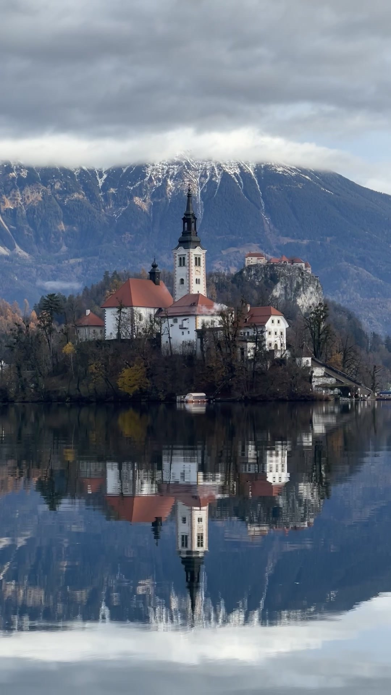

Блед и Бохинь, перевал Вршич, изумрудная Соча и рестораны Michelin по пути — места, где по-настоящему отдыхаешь. Нажмите номер на карте — откроется место в списке.
Та самая картинка из инстаграма. До острова — на деревянной лодке-плетне, наверх ведут 99 ступеней, а в церкви висит колокол желаний: говорят, если позвонить, желание сбудется.
Открыточный вид на озеро и остров сверху. Подъём по лесной тропе минут 20–30, лучше всего утром, пока мало людей.
Средневековый замок на скале прямо над озером — с террасы видно остров и горы. Внизу вдоль воды идут деревянные мостки, по ним можно обойти озеро.
Деревянные мостки над бирюзовой рекой в узком каньоне, в 10 минутах от Бледа. Открыто с весны до поздней осени, зимой закрыто.
Самое большое озеро Словении и намного тише Бледа. У воды — каменный мост и маленькая церковь Св. Иоанна Крестителя на фоне гор.
Водопад падает в изумрудную чашу между скал. Наверх — каменные ступени через лес, около 20 минут.
Несколько минут наверх — и всё озеро Бохинь и Юлийские Альпы как на ладони. Наверху есть кафе с видом.
Самая красивая горная дорога страны: 50 серпантинов из Краньской Горы в долину Сочи. Зимой перевал закрыт.
Маленькое горное озеро, в котором отражаются вершины. Хорошо остановиться по дороге на Вршич.
Изумрудная река в узком каменном ущелье — цвет воды кажется ненастоящим. Смотреть с подвесного моста.
Водопад, спрятанный в каменном зале, — как пещера с открытым небом. Короткая тропа вдоль реки.
Вода падает со скального козырька, и под ним можно пройти прямо за стеной водопада. По пути из Бледа к Краньской Горе.
Невысокий водопад и бирюзовое озерцо под ним — одно из самых фотогеничных мест у Бовеца. От парковки несколько минут пешком.
Маленькое изумрудное озеро-источник с деревянной смотровой — вода настолько прозрачная, что видно дно. Пара минут от трассы у Краньской Горы.
Самый высокий водопад Словении — 144 метра, падает прямо из скалы. Смотровая в 15 минутах подъёма от дороги.
Самая низкая точка национального парка Триглав: мостики над узкими ущельями и камень-«медвежья голова», застрявший между скал. Открыто с весны до осени.
Цепочка высокогорных озёр под Триглавом — самый красивый поход в национальном парке. Это целый день в пути, тропа идёт от водопада Савица, лучше с ночёвкой в горной хижине. Сезон — лето и ранняя осень.
Два озера с ярко-голубой водой под стеной гор — уже в Италии, но всего в 15 минутах от Краньской Горы. Можно заехать за кофе по-итальянски и вернуться.
Лучший ресторан Словении: шеф Ана Рош, дегустационный сет из того, что растёт вокруг долины Сочи. Бронировать сильно заранее.
Ресторан шефа Давида Жефрана у озера Ясна — горная кухня современно и легко. Удобно совместить с перевалом Вршич.
В 10 минутах от Бледа, в старом городке Радовлица. Звёздный ужин после дня на озере.
Тот самый ресторан из ролика: камин, потрескивают дрова, за окном горы. Мы пришли между обедом и ужином и не дождались горячего — так что только с бронью.
Гостилна на холме в получасе от Любляны: местные продукты, спокойный загородный вид.
Маленькая уютная столица: Тройной мост, кафе вдоль реки Любляницы, старые улочки. Мы гуляли здесь с собакой — очень дружелюбный город.
Замок, встроенный прямо в скалу у входа в пещеру. Рядом Постойнская пещера — можно совместить.
Венецианский городок на мысу у моря: площадь Тартини, красные крыши и закат над Адриатикой.
Подземный каньон под охраной ЮНЕСКО: мост висит над рекой на высоте 45 метров. Вход только с экскурсией.
Одна из самых красивых ледниковых долин Европы: панорамная дорога Солчава, хутора и водопад Ринка. Далеко от Бледа — лучше отдельным днём.